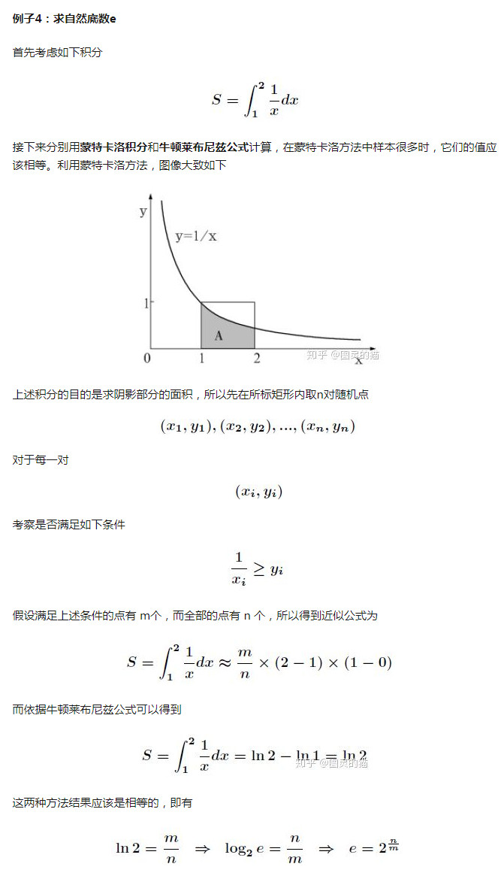

遗传算法，我知道，这是一大类算法，但这算法的思想着实让人感到「惊艳」。
非常朴素的随机迭代、通过Fitness函数筛选，模拟自然界的生物进化过程，就能解决很多问题。
北京的那个鸟巢体育馆的钢结构，就是用遗传算法迭代出来的，整体非常稳固。
日本的新一代高速列车车头用遗传算法设计，节约了30%的能量。
美国的 X-Band 卫星上的天线用演化算法设计，体积只有硬币大小。
社会学研究上，有用演化算法配合神经网络工作，也非常有趣。
遗传算法可能看起来很「暴力」，很「粗糙」，但是确实蕴含了很多的「可能性」，而且非常自然，非常容易理解，是非常美的算法。
[1946: John von Neumann, StanUlam, and Nick Metropolis, all at the Los Alamos Scientific Laboratory, cook upthe Metropolis algorithm, also known as the Monte Carlo method.]
1946年，美国拉斯阿莫斯国家实验室的三位科学家John von Neumann,StanUlam 和 Nick Metropolis共同发明，被称为蒙特卡洛方法。
它的具体定义是：在广场上画一个边长一米的正方形，在正方形内部随意用粉笔画一个不规则的形状，现在要计算这个不规则图形的面积，怎么计算列?
蒙特卡洛(Monte Carlo)方法告诉我们，均匀的向该正方形内撒N（N 是一个很大的自然数）个黄豆，随后数数有多少个黄豆在这个不规则几何形状内部，比如说有M个，那么，这个奇怪形状的面积便近似于M/N，N越大，算出来的值便越精确。
在 这里我们要假定豆子都在一个平面上，相互之间没有重叠。(撒黄豆只是一个比喻。) 蒙特卡洛方法可用于近似计算圆周率：让计算机每次随机生成两个0到1之 间的数，看这两个实数是否在单位圆内。生成一系列随机点，统计单位圆内的点数与总点数，内接圆面积和正方形面积之比为PI:4，PI为圆周率。当随机点取 得越多（但即使取10的9次方个随机点时，其结果也仅在前4位与圆周率吻合）时，其结果越接近于圆周率。
[1962: Tony Hoare of Elliott Brothers, Ltd., London,presents Quicksort.]
1962年：伦敦的，托尼埃利奥特兄弟有限公司，霍尔提出了快速排序。哈哈，恭喜你，终于看到了可能是你第一个比较熟悉的算法~。
快速排序算法作为排序算法中的经典算法，它被应用的影子随处可见。快速排序算法最早由Tony Hoare爵士设计，它的基本思想是将待排序列分为两半，左边的一半总是“小的”，右边的一半总是“大的”，这一过程不断递归持续下去，直到整个序列有序。
说 起这位Tony Hoare爵士，快速排序算法其实只是他不经意间的小小发现而已，他对于计算机贡献主要包括形式化方法理论，以及ALGOL60 编程语言的发明等，他也因这些成就获得1980 年图灵奖。快速排序的平均时间复杂度仅仅为O(Nlog(N))，相比于普通选择排序和冒泡排序等而言，实在是历史性的创举。
首先映入我脑海里的是 John Carmack 的Quake引擎里的一段代码, 求一个数的平方根的倒数(注意是倒数,不是导数). John Carmack 是id software的创始人, 也是经典第一视角游戏 Doom 和 Quake 的作者. 他对自己的Quake游戏引擎进行开源, 极大地促进了整个3D游戏行业前进的步伐. 连比尔盖茨都将 Carmack 列为自己的崇拜对象!
一般能想到的办法是:
1. 调用系统库函数: sqrt, 然后再除1;
2. 二分法逼近 (之前Facebook的有道面试题即是);
3. 牛顿迭代法
而在Quake渲染引擎中, 有这么一段代码 (将其标号: #4 Quake InvSqrt 算法):
float InvSqrt (float x){
float xhalf = 0.5f*x;
int i = *(int*)&x;
i = 0x5f3759df - (i>>1);
x = *(float*)&i;
x = x*(1.5f - xhalf*x*x);
return x;
}
看见Carmack代码里面的方法比起系统方法还快一倍以上, 而且实现方式短小且神奇. 其本质上也是使用了牛顿迭代法, 但是通过预先猜测的一个神奇数字 0x5f3759df, 来将迭代次数降到极限的一次 (另外通过整形数的移位来进一步加速). 这让我不由得想到苏联飞机米格29引擎的暴力美学. 详细解说看这个: Beyond3D - Origin of Quake3's Fast InvSqrt()
P.S. 为什么InvSqrt在Quake引擎中被重新实现? 这是因为3D变换过程中要涉及到大量的平方根翻转操作 (比如3D向量的normalization), 所以对于这个函数的优化对于3D引擎的效率非常关键. 这也直接促使nVIDIA在最新的GPU的指令集中自带"nrm"; 此命令来借用硬件加速直接完成3D向量的normalization操作.
类似的, Quake3里的开方函数源代码:
double sqrt( double x ) {
float y;
float delta;
float maxError;
if ( x <= 0 ) {
return 0;
}
// initial guess
y = x / 2;
// refine
maxError = x * 0.001;
do {
delta = ( y * y ) - x;
y -= delta / ( 2 * y );
} while ( delta > maxError || delta < -maxError );
return y;
}
同样也是短小精妙. 另外附带
Quake引擎架构分析: Quake Source Code Review
Quake3代码分析: Quake 3 Source Code Review: Architecture
Quake代码的GitHub页: id-Software/Quake · GitHub
附带我偶像John Carmack的一张照片 (祝Oculus在Facebook帝国的支持下欣欣向荣):
计算Fibonacci(斐波那契)数列的第n项: 这个之前在我的Facebook面试总结里面有写过, 可以递归也可以递推, 这样的复杂度是O(N), 也可以用矩阵相乘的算法, 这样可以O(LogN)的复杂度解决. 本来也就这样作罢, 但是最近看了"星际穿越"之后, 突然顿悟到这个Fibonacci和星际穿越有异曲同工之妙:
在一维世界中只能通过公式 F(n) = F(n-1) + F(n-2) 来计算. 这时, 线性的算法(O(N))是一维世界下的极限. 要如何加速呢? 类推到星际穿越中的话, 可行的方法就是升维, 从一维升到二维空间 (一维的F(n)升级到二维矩阵), 也就是说我们用升维将一维空间进行扭曲从而将距离缩短. 于是 [F(n), F(n-1)] = M^(n-1) [1, 1] ( M 是一个二维的常数矩阵). 这样我们便可以更快地从 [1, 1] 到达 [F(n), F(n-1)]. 看! 多么像一个数学世界里面的时空穿越呀!
新冠病毒的检测需要采样咽拭子，然后将其中含有的碱基对解螺旋、经过聚合酶链式反应（PCR）扩增后与相应的荧光探针结合，然后进行检测。
而制造能与病毒碱基序列结合的荧光探针，需要知道病毒的碱基序列。
在这个过程中，有一个算法发挥了巨大的作用。
如今的这个算法已经变得十分基础，也有更多的算法超越了它。
但是，它诞生的那一刻，必定闪耀着人类智慧的光芒。
我第一次见到这个算法时，经历了拒绝、疑惑、不解。
直到后来，一切全都化为了惊叹。
这个算法叫KMP算法。由于三个字母的原因，有人戏称为“看毛片”算法。但它和“毛片”真的没有一点关系。KMP实际是合力研究出该算法的三位大神的姓名首字母。是的，这个算法是当时三个大神共同努力的结果。
它实际是一个字符串匹配算法。
那它如何为基因测序做出贡献，又为什么让我拒绝、疑惑、不解，最后惊叹。我们一起来重新感受下。
首先，我们先给出算法解决的问题，这是一个极为常见的字符串匹配问题。
存在一个字符串T，请找出其是否含有子串P，如果有，请给出P所在的位置。
假设字符串T的长度为m，字符串P的长度为n。
则见到这个问题后，有经验的程序员不出5秒就能知道其时间复杂度为O(m×n)。是的，这是很多人的第一反应。其推导如下。
字符串T我们常称为主串，而P则被称为模式串。在主串的任意一个位置，我们都要以此为起点和模式串依次对比。模式串长度为n，而主串中有m个位置，则复杂度为O（m×n）。
T: ABCFEDABCFTYGFHTABCDEFHMI
P: ABCDEFG
我听说有个算法能做到复杂度O(m+n)的时候，还没学这门课。听说那个算法叫KMP。
不可能，我内心是拒绝的。
怎么可能呢，O(m+n)意味着比较指针不能回撤，直觉告诉我这是不可能的。
我以O(m+n)为目标尝试了几下，没找到什么思路。
然后我搜了一下各种资料。
竟然真的是……
KMP算法怎么做的？我全是疑惑！
那时的我把算法找来，读了一遍。
给你，你先读一遍吧。
/**
* 求出一个字符数组的next数组
* @param t 字符数组
* @return next数组
*/
public static int[] getNextArray(char[] t) {
int[] next = new int[t.length];
next[0] = -1;
next[1] = 0;
int k;
for (int j = 2; j < t.length; j++) {
k=next[j-1];
while (k!=-1) {
if (t[j - 1] == t[k]) {
next[j] = k + 1;
break;
}
else {
k = next[k];
}
next[j] = 0; //当k==-1而跳出循环时，next[j] = 0，否则next[j]会在break之前被赋值
}
}
return next;
}
/**
* 对主串s和模式串t进行KMP模式匹配
* @param s 主串
* @param t 模式串
* @return 若匹配成功，返回t在s中的位置（第一个相同字符对应的位置），若匹配失败，返回-1
*/
public static int kmpMatch(String s, String t){
char[] s_arr = s.toCharArray();
char[] t_arr = t.toCharArray();
int[] next = getNextArray(t_arr);
int i = 0, j = 0;
while (i<s_arr.length && j<t_arr.length){
if(j == -1 || s_arr[i]==t_arr[j]){
i++;
j++;
}
else
j = next[j];
}
if(j == t_arr.length)
return i-j;
else
return -1;
}
卧槽，没读懂。
这算法牛逼啊！我不解。
这个不解就一直闷在我的心头。
直到后来，我坐在图书馆，啃透了KMP算法。
（现在网上很多视频教程，讲得很好，十分钟看完就能懂，比自己啃快多了）
牛！真牛！
主要是思路牛。
下面我给出一个KMP算法的实现动画，大家关注一下最上面的比较指针，真的没有任何回撤操作。
KMP算法动画演示
等你真正理解了它，发现它并没有太复杂，主要是利用了模式串中的相关性。甚至，会有更优的算法被提出。但是KMP算法由D.E.Knuth、J.H.Morris、V.R.Pratt发表于1977。在那个年代，相信KMP算法诞生时，一定闪耀着光芒。
那KMP算法为什么会和基因扯上关系呢？
平时，我们的文本，也就几百上万的字符。即使是做大数据分析（我以前在某度厂做过大数据分析），接触到的字符串也不过几十万、上百万个。当然，在这个尺度下，O（m×n）算法和O（m+n）的性能差别已经是极为巨大的。
然而，人类的基因序列，就是腺嘌呤（A）、鸟嘌呤（G）、胞嘧啶（C）、胸腺嘧啶（T）组成的那些ATCGCTACG……等朴实无华的序列串，有30亿个（即30亿对碱基对）。
基因片段的拼接需要不断在上亿的序列（碱基对）中找一个目标序列，O（m×n）算法和O（m+n）的性能差别有万倍、百万倍，甚至更多。
只用暴力匹配的方式，难以完成。
而KMP算法将O（m×n）降到了O（m+n）。只需要读取一遍目标串和模式串，就能给出结果！
在KMP算法诞生的1977年，那时人类才发现DNA的双螺旋结构不过20年，再过大约15年后人类基因组计划才会开始。
当然，在KMP算法诞生后人类基因组计划开始前的15年中，字符串匹配算法可能又会有进步，并且字符串匹配算法也并不最适合基因测序（具体原因参见下方
@奶油煎蛋红烧肉
的评论）。是新的算法（例如OLC、de Bruijn Graph等算法）用在了基因组计划中。但KMP算法在匹配方面的研究已经打好了基础，它已经提前为人类基因组计划扫除了部分算法上的障碍。
之后，也正因为基因测序技术的发展，人类能迅速锁定出新冠病毒的序列，然后研发测试试剂。帮我们开展测试，推动人类抵御这场突如其来的病毒。
所以，在这场全世界抗击疫情的斗争中，有算法的身影。低调、朴实，但也无可替代。
如今的它，低调，朴实，甚至让人觉着习以为常。
但我知道，它曾经闪耀着人类智慧的光芒；而今，也依旧令人惊艳和伟大。
我来个简单的：地精排序。
我前几天收集奇葩排序系列时，就感觉地精排序真是太有趣了！！！
Gnome 排序（地精排序），起初由 Hamid Sarbazi-Azad 于 2000 年提出，并被称为 stupid 排序，后来被 Dick Grune 描述并命名为 “地精排序” 。
地精排序和插入排序类似，除了移动一个元素到最终的位置，是通过交换一系列的元素实现，就像冒泡排序一样。概念上十分简单，不需要嵌套循环。时间复杂度为O(n2)，但是如果初始数列基本有序，时间复杂度将降为O(n)。实际上 Gnome 算法可以和插入排序算法一样快。平均运行时间为O(n^2)。
将无序数列：6，2，4，1，5，使用地精排序使其从小到大排序。
通过设计标识 i = 0 ，然后从头开始判断，什么时候 ( i < 4 ) 不成立,什么时候排序结束。
这里的核心点就是 如何控制 i 的值。
第一轮操作「i = 0」
先让 i 自增 1 ，达到值为 1 才开始比较 ：
交换前 [ 6 2 4 1 ] 『 i = 0 』
交换后 [ 6 2 4 1 ] 『 i = 1 』
第二轮操作「i = 1」
比较 6 和 2 ，发生交换，只要发生交换 i 就减 1 。
交换前 [ 6 2 4 1 ]『 i = 1 』
交换后 [ 2 6 4 1 ]『 i = 0 』
第三轮操作「i = 0」
i 变成 0 了，啥也不干，自增变成 1 再说。
交换前 [ 2 6 4 1 ]『 i = 0 』
交换后 [ 2 6 4 1 ]『 i = 1 』
第四轮操作「i = 1」
比较 2 和 6 ，不交换，只要不要换就自增 1。
交换前 [ 2 6 4 1 ]『 i = 1 』
交换后 [ 2 6 4 1 ]『 i = 2 』
第五轮操作「i = 2」
比较 6 和 4 ，发生交换，只要发生交换 i 就减 1 。
交换前 [ 2 6 4 1 ]『 i = 2 』
交换后 [ 2 4 6 1 ]『 i = 1 』
第六轮操作「i = 1」
比较 2 和 4 ，不交换，只要不要换就自增 1 。
交换前 [ 2 4 6 1 ]『 i = 1 』
交换后 [ 2 4 6 1 ]『 i = 2 』
第七轮操作「i = 2」
比较 4 和 6 ，不交换，只要不要换就自增 1 。
交换前 [ 2 4 6 1 ]『 i = 2 』
交换后 [ 2 4 6 1 ]『 i = 3 』
第八轮操作「i = 3」
比较 6 和 1 ，发生交换，只要发生交换 i 就减 1 。
交换前 [ 2 4 6 1 ]『 i = 3 』
交换后 [ 2 4 1 6 ]『 i = 2 』
第九轮操作「i = 2」
比较 4 和 1 ，发生交换，只要发生交换 i 就减 1 。
交换前 [ 2 4 1 6 ]『 i = 2 』
交换后 [ 2 1 4 6 ]『 i = 1 』
第十轮操作「i = 1」
比较 2 和 1 ，发生交换，只要发生交换 i 就减 1 。
交换前 [ 2 1 4 6 ]『 i = 1 』
交换后 [ 1 2 4 6 ]『 i = 0 』
第十一轮操作「i = 0」
啥也不干，先让 i 自增1，达到值为 1 才开始真正的比较。
『 i = 1 』时，比较 1 和 2 ，不交换，只要不交换就自增 1 。
『 i = 2 』时，比较 2 和 4 ，不交换，只要不交换就自增 1 。
『 i = 3 』时，比较 4 和 6 ，不交换，只要不交换就自增 1 。
『 i = 4 』时，表达式 （ i < n ) 不成立，排序结束。
顺序输出为 [ 1 2 4 6 ]。
比较菜，没学过多少算法
数论方面惊艳的算法很多
比如说生成函数，推通项公式不是一般的有用
比如说BSGS，神奇的折半枚举
比如说杜教筛，惊艳的记忆化搜索
还有莫比乌斯反演，exlucas之类的都一度让我感到惊艳
字符串方面
kmp的增量思想
AC自动机的路径压缩
只有二十行代码的后缀自动机，加两句就能变成多模式串的广义后缀自动机
后缀数组求lcp
大概因为我字符串比较菜，每个字符串算法都让我感觉涨姿势了
数据结构方面
线段树的打标记
各种平衡树降低复杂度的方法
动态点分治里暴跳点分树
KD-tree的神奇用法（代替树套树，可持久化树套树
线段树合并的复杂度
平衡树启发式合并的复杂度
dsu on tree的实现
其实有些不大知道算不算数据结构，如果有错请大佬们指出一下
图论
最早并查集，按秩合并和路径压缩
之后的最小生成树，kruskal的正确性证明
最短路floyd三重循环的顺序
圆方树显然也算一个
然后网络流的建模，这个不一定称得上算法，但的确每个问题的模型都很惊艳
最后的话一定要加上一个从接触信奥到退役为止都没完全学会的动态规划……（当然其他也没完全学会
Integer的bitCount函数，用来计算一个int整数的二进制补码表示中1的个数。和下面这个代码相比，&1，移位，即便是x &= x - 1都弱爆了。特别是函数里的第一行，用的是减号，花了好长时间才理解清楚。
/**
* Returns the number of one-bits in the two's complement binary
* representation of the specified {@code int} value. This function is
* sometimes referred to as the <i>population count</i>.
*
* @param i the value whose bits are to be counted
* @return the number of one-bits in the two's complement binary
* representation of the specified {@code int} value.
* @since 1.5
*/
public static int bitCount(int i) {
// HD, Figure 5-2
i = i - ((i >>> 1) & 0x55555555);
i = (i & 0x33333333) + ((i >>> 2) & 0x33333333);
i = (i + (i >>> 4)) & 0x0f0f0f0f;
i = i + (i >>> 8);
i = i + (i >>> 16);
return i & 0x3f;
}
AC自动机
生成迷宫的 随机prim算法
十分令人惊艳的算法 算法简洁自然
第一次看的时候是先有代码，后来才知道这是生成迷宫中的一种常用算法。
当时也是年轻，直接看代码，想要通过代码理解迷宫的生成过程。而这个代码写的又比较精炼，又没啥注释，着实让我废了一番功夫才理解，当时还不知道这个算法叫随机prim算法，感觉它是借助集合的思想来实现的，后来自己写总结的时候还叫它集合法生成迷宫算法。
算法的思想是，用集合表示迷宫中的可达路径，通过随机的集合合并，生成错综曲折的路径，直至最终把出口和入口纳入到一个可达路径为止。
为什么没有人说FFT，把离散傅里叶变换的计算量下降了几个数量级
a星算法，绝对是，较之迪杰斯特拉算法，加了一个启发系数，极大降低了搜索空间，提高算法效率，没有这个算法估计很多游戏的NPC寻路都跑不动。
图有关的 FLOYD ，PRIM，Dijkstra
密码学 RSA
字符串匹配 AC自动机，KMP啊什么的
说到惊艳，我第一个想到的是遗传算法，这虽然不是我研究过的最酷的算法，确是第一个让我有惊艳的算法。我当时的感觉就就是woc还可以这样操作，自己以前真的是思维僵化。之后见过的绝大多数启发式搜索算法祖宗都是遗传算法。也就是这个算法让我在算法的路上一去不复返。
字符串查找Rabin-Karp算法，虽然之前已经了解KMP、BM、AC相关算法，但Rabin-Karp确实惊艳到我啦！
回文(对称的字符串)的判断方法，Powered By Python：
<p>def isPalindrome(s):</p> <p> return s == s[::-1]</p>
1. 一个变量遍历2维数组
a[9][9];
i = 81;
while(i --){
proc( a[ i / 9 ][ i % 9 ] )
}
2. 不引入第三变量交换两个int的值
a = a + b
b = a - b
a = a - b
虽然都是然并卵的东西，但很适合IT狗饭局暖场用
FFT，让信号处理的实时性成为可能
差分，差分代替偏导吧，一次二阶矩算法有应用，一次二阶矩，学过高数的应该都懂，就不多加解释了。
八卦算法，以数量推概率，以概率总结规律，再以规律回推事件的概率，不同的事件，拥有不同的规律，大体有六十四种事件，或许更多。
拉格朗日算法，简单粗暴，我喜欢！
牛顿算法，牛顿下山法，等等，一系列的，差不多是算法的最初了。
遗传算法，根据，当前环境，利用一个指标，筛选出当前最优的一个解，然后，再次迭代，当前最优解，不断与下一代最优解进行比较。相当于，从历史的长河中，选出一个，在特定方面，最有建树的人。
蒙特卡洛算法，利用无穷数据，以频率接近概率的方式，求解。
强化算法，利用奖赏机制，使有利于当前，任务需求，或在当前环境生存的行为，扩大权重比，而不好的行为，则减少权重比。
进化算法，对当前算法，进行随即改变，然后同遗传算法一样，筛选出，好的改变，然后增加其权重。
对抗算法，利用两种算法，进行对抗学习，其中一种是生成算法，利用生成算法，不断与真实事件，进行博弈，使得，生成算法，达到以假乱真的程度。
量子算法，量子算法，利用算法，缔造平行算法，使得不同的平行算法之间，情况都各不相同，不同的事件任务需求，也就是不同算法得出来结果，而且，可以大大减少参数和计算量。
最后说一个，前向传播算法中的一种，cd算法，前向传播算法，顾名思义，就是向前顺序运算，简单的不得了，但其却可能是未来的一个非常重要的方向，越简单的，也越难创新，改进，优化，和做出巧妙的应用。而，一旦应用，其稳定和准确，不是其他复杂搜索算法所能比拟的。
以上的算法，或者，用来求解数学问题，嗯，求解，说到底也算一种预测，只不过，生活中的数学，大体没有那么虚幻，预测一个方程组的解，根据算法就可以预测了，而一些，类似于，看见一个东西，对其命名，也算一种预测，只不过这种预测，在于人脑，在于计算机程序，看不见摸不到。
又有，人口预测，股市预测，等等。
在一个高阶非线性的世界，我们只能尽可能的去精准，然而还是有误差的。算法的不断优化，避免了，人脑里手动计算。
查找子串的kmp算法，直接把复杂度从m*n降到m+n，以前读书时候真的被惊艳到了，思路惊奇啊